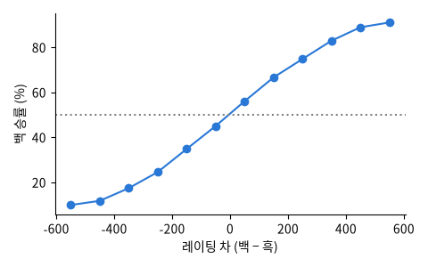

온라인 체스 Lichess 의 모든 대국 기록 (CC0) 중 2013년 1월 121,332판 (Hugging Face Lichess/standard-chess-games): 결과 · 두 사람 레이팅 · 시간 규칙 · 수 기록

| Result | WhiteElo | BlackElo | TimeControl | Termination | Opening | ECO | diff |
|---|---|---|---|---|---|---|---|
| 0-1 | 1789 | 1664 | 0+1 | Normal | Hungarian Opening: Symmetrical Variation | A00 | 125 |
| 0-1 | 1331 | 1331 | 900+8 | Normal | Scotch Game: Classical Variation | C45 | 0 |
| 1-0 | 1943 | 1730 | 0+1 | Time forfeit | Queen's Gambit Declined: Vienna Variation | D44 | 213 |
| 0-1 | 1579 | 1635 | 420+5 | Normal | French Defense: Knight Variation | C00 | -56 |
| 1-0 | 1820 | 1887 | 600+8 | Time forfeit | Slav Defense #2 | D10 | -67 |
| 1-0 | 1604 | 1567 | 300+2 | Normal | Sicilian Defense: Closed Variation, Traditional | B25 | 37 |
| 열 | 종류 | 빈칸 | 고유값 수 | 범위 · 대표값 |
|---|---|---|---|---|
| Result | 글자 · 범주 | 0 | 3 | 가장 흔한 값: 1-0 (51.2%) |
| WhiteElo | 숫자 | 0 | 1337 | 782 ~ 2403 (평균 1,606.0) |
| BlackElo | 숫자 | 0 | 1356 | 789 ~ 2386 (평균 1,595.8) |
| TimeControl | 글자 · 범주 | 0 | 394 | 가장 흔한 값: 60+0 (12.0%) |
| Termination | 글자 · 범주 | 0 | 2 | 가장 흔한 값: Normal (68.8%) |
| Opening | 글자 · 범주 | 0 | 1846 | 가장 흔한 값: Van't Kruijs Opening (3.3%) |
| ECO | 글자 · 범주 | 0 | 411 | 가장 흔한 값: A00 (7.8%) |
| diff | 숫자 | 0 | 1654 | -1257 ~ 1257 (평균 10.15) |
차가 클수록 높은 쪽이 이긴다 (Elo 의 설계대로)
| ① 한 행 | 대국 하나 |
| ② 입력 X | 백 · 흑 레이팅, 레이팅 차, 시간 규칙 |
| ③ 출력 y | 백 승 / 무승부 / 흑 승 |
| ④ 평가지표 | 정확도 · 로그 손실 |
| ⑤ 기준선 | 레이팅이 높은 쪽이 이긴다 |
문제를 정할 때 처음 채워 보는 칸들입니다. 여기서 끝이 아니라, 시험 데이터를 어떻게 나눌지 · 틀렸을 때 손해가 얼마인지 · 예측 시점에 정말 알 수 있는 값인지 같은 칸을 더 붙일수록 좋은 문제가 됩니다.
always white wins : accuracy 51.3% higher rating wins : accuracy 64.2% logistic (3 numbers) : accuracy 64.1%, log loss 0.730
누가, 왜, 어떻게 만든 데이터인지 직접 확인해 보세요.
인턴 · 산학협력 · 프로젝트 주제를 고를 때 참고하세요 (일반적인 예시).